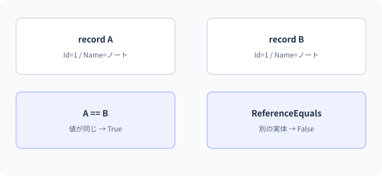

14 recordと等値性 — 詳細解説
等値性と参照の同一性。
内容が同じ二つの成績を「同じ」と呼ぶとき、同じ実体なのか、同じ値なのかを決める必要があります。二つの比較結果を確認してから、withによる変更版の作成へ進みます。
参照の同一性と値の等値性
同一性は、同じオブジェクトそのものかという問いです。等値性は、決めた規則で値が等しいかという問いです。同じ名前と価格を持つ二つの商品オブジェクトを別々にnewした場合、実体は別です。しかし注文の値を比較したい処理では、内容が等しいと扱いたいことがあります。
C#の==は型によって意味が異なり、演算子として定義を変えられる型もあります。Equalsも型によって実装が異なります。ReferenceEqualsは参照の同一性を問うものです。「==は必ず参照比較」「Equalsは必ず内容比較」と一律に暗記しないことが重要です。
最小例：通常のclassとrecord
var first = new ProductClass("Pen", 100);
var second = new ProductClass("Pen", 100);
Console.WriteLine(first == second);
Console.WriteLine(first.Equals(second));
var one = new ProductRecord("Pen", 100);
var two = new ProductRecord("Pen", 100);
Console.WriteLine(one == two);
Console.WriteLine(ReferenceEquals(one, two));
public class ProductClass
{
public string Name { get; }
public int Price { get; }
public ProductClass(string name, int price)
{
Name = name;
Price = price;
}
}
public record ProductRecord(string Name, int Price);期待出力はFalse、False、True、Falseです。このProductClassは等値性をカスタマイズしていないので、別の実体は等しくありません。record classには値に基づく等値性のためのメンバーが生成されるので、同じ実行時のrecord型で対応する値が等しい二つは等しいと扱われます。ただし実体は別です。
recordは、データを中心とする型で等値性・表示・コピーなどの定型的な実装をコンパイラーに生成させる機能です。recordだけならrecord class、record structなら値型です。recordを使えばデータベース上の同じ行か自動で判断されるわけではありません。何を同じ値とするかは設計の問題です。
recordの構文を分解する
public record ProductRecord(string Name, int Price);では、ProductRecordが型名、かっこ内が位置指定パラメーターです。このrecord classでは、対応する公開のinitプロパティなどが生成されます。NameとPriceを受け取るコンストラクター、値に基づくEqualsやGetHashCode、表示用のToStringなどの定型的な処理も用意されます。
initは初期化段階などに代入を制限するアクセサーです。すべてのrecordが自動的に完全不変になるという意味ではありません。自分でset可能なプロパティを持たせることもでき、参照型のプロパティが可変オブジェクトを指す場合は内部を変更できることもあります。
recordという単語だけでは、代入で参照がコピーされるか値がコピーされるかを判断できません。
参照型通常の代入では参照をコピー
値型通常の代入では値をコピー
record classとrecord structのどちらも値ベースの等値性を提供しますが、classとstructの基本的なコピーの性質まで同じになるわけではありません。
withで一部を変えた新しい値を作る
var original = new Product("Pen", 100);
var discounted = original with { Price = 80 };
Console.WriteLine($"{original.Name}:{original.Price}");
Console.WriteLine($"{discounted.Name}:{discounted.Price}");
Console.WriteLine(ReferenceEquals(original, discounted));
public record Product(string Name, int Price);期待出力はPen:100、Pen:80、Falseです。with式は元のrecordからコピーを作り、指定した値を新しい方へ設定します。originalを直接80へ変更しているわけではありません。
| 時点 | original | discounted | 内容 |
|---|---|---|---|
| 生成後 | 実体A | 未宣言 | A=(Pen,100) |
| コピー | 実体A | 実体B | Bもいったんコピーした状態 |
| Price設定 | 実体A | 実体B | A=(Pen,100), B=(Pen,80) |
- 1元のrecord
Product(Pen, 100)
- 2with
フィールド等をコピーした別のrecordを作る
- 3Price = 80
新しい側の値を変更
- 4結果
元100、新80
record structでは値型のコピーとして扱います。どちらも参照先の子オブジェクトまで自動で深いコピーになるわけではありません。withという文法を見たら「何が直接コピーされるか」を確認します。
本文の実例との対応：等値性と参照の同一性
次の図は本文の実例「編集前後の商品データ」を使った補助例です。この節のコードとは変数や入力値が異なるため、処理の対応に注目します。

間違い：withを深いコピーだと思う
var original = new Basket(new List<string> { "Pen" });
var copied = original with { };
copied.Items.Add("Book");
Console.WriteLine(string.Join(",", original.Items));
Console.WriteLine(ReferenceEquals(original.Items, copied.Items));
public record Basket(List<string> Items);誤解を観察する例の期待出力はPen,Book、Trueです。Listは追加・削除できるコレクションです。recordの実体は別でもItemsが持つListへの参照は共有されています。そのListへAddすると元からも変更が見えます。
修正位置はwithで設定するItemsです。
var original = new Basket(new List<string> { "Pen" });
var copied = original with { Items = new List<string>(original.Items) };
copied.Items.Add("Book");
Console.WriteLine(string.Join(",", original.Items));
Console.WriteLine(string.Join(",", copied.Items));
public record Basket(List<string> Items);修正後の期待出力はPen、次の行にPen,Bookです。新しいListを用意し、要素をコピーしています。要素がstringなので、この例では文字列の不変性を利用できます。要素が可変の参照型なら、その要素のコピー方針も別途決める必要があります。
境界・比較例：参照型メンバーが等値比較へ与える影響
List<T>の通常の等値比較は要素の列全体の比較ではありません。要素を比較したい場合はSequenceEqualなどを明示します。
var a = new Team(new List<string> { "Aoi" });
var b = new Team(new List<string> { "Aoi" });
Console.WriteLine(a == b);
Console.WriteLine(a.Members.SequenceEqual(b.Members));
record Team(List<string> Members);想定出力
False
True配列プロパティの等値性に注意する
recordが対応するプロパティを比較しても、配列が自動的に要素ごとの比較へ変わるわけではありません。配列は通常のEqualsで参照の同一性を比較します。
var a = new Scores(new[] { 80, 90 });
var b = new Scores(new[] { 80, 90 });
Console.WriteLine(a == b);
Console.WriteLine(a.Values.SequenceEqual(b.Values));
public record Scores(int[] Values);期待出力はFalse、Trueです。SequenceEqualは並びの要素が順に等しいかを調べるLINQメソッドです。LINQはデータ操作の共通の仕組みで、Lesson 18から詳しく学びます。ここでは「配列の実体が同じ」と「要素の並びが同じ」を分けるために使っています。
データを値として比較したいからrecordにしたのに、内部のコレクションは期待と違う規則で比較される場合があります。入れ子の型の等値性を含めて確認することが必要です。記録された順序を意味のあるものとするか、順不同の集合として比較するかも要件で決めます。
recordのメンバーが配列の場合、配列の既定の等値性を要素ごとの比較と同一視しないでください。
二つのメンバーが配列Aを指す参照が一致する
配列A=[1,2] / 配列B=[1,2]既定の配列の比較は要素比較ではない
要素の並びを比較したいならSequenceEqualなどを明示して使う考え方があります。どの比較を型の契約とするかを設計します。
string・object・Equalsの違い
string first = new string(new[] { 'A', 'B' });
string second = new string(new[] { 'A', 'B' });
Console.WriteLine(first == second);
object left = first;
object right = second;
Console.WriteLine(left == right);
Console.WriteLine(left.Equals(right));期待出力はTrue、False、Trueです。string型としての==は文字列の値の等しさを比較します。object型の変数同士の==はこの例では参照比較です。一方、Equalsは実体のstringの実装を利用するため内容が等しいと判断されます。
演算子の選択では式の型が重要で、メソッドの実行ではオーバーライドなども関係します。left.Equals(right)はleftがnullなら呼べないので、nullを含む比較ではobject.Equals(left, right)や適切な型の比較方法を検討します。比較対象の型と目的を明示する方が、記号だけの暗記より確実です。
GetHashCodeとコレクションのキー
ハッシュコードは、値を効率よく分類・検索するための数値です。DictionaryやHashSetなどで利用されます。「等しい値なら同じハッシュコードになる」ことが必要ですが、「同じハッシュコードなら等しい」とは限りません。異なる値が同じコードになる衝突があり得ます。
Equalsを自分で上書きする場合は、GetHashCodeとの整合性を保ちます。キーに使った後で等値性に関わる状態を変えると、登録時と検索時のハッシュが変わり、見つからなくなる原因になります。recordも変更可能なメンバーを持てるため、recordならどんな状態でも安全なキーになるわけではありません。
ハッシュコードをデータベースの永続IDや秘密情報の安全なハッシュとして流用しません。実行や環境をまたいで同じ値が保証される識別子とは目的が違います。業務上のIDと、検索のための補助値を分けます。
辞書のキーを探す処理は、ハッシュ値と等値性の約束に依存します。
- 1登録時
キーの値からハッシュを求める - 2保存
ハッシュに対応する場所で管理 - 3検索時
検索キーのハッシュと等値性を使う - 4守る条件
登録中のキーの比較用の値を安定させる
これは検索を説明する概念図です。キーとして登録した後に比較対象の値を変更すると、登録時と検索時の前提がずれて見つからなくなる可能性があります。
class・struct・recordの選択
| 種類 | コピーの基本 | 等値性の典型 | 主な選択場面 |
|---|---|---|---|
| class | 参照をコピー | 未変更なら参照の同一性 | 状態と同一性を持つ業務対象・サービス |
| struct | 値をコピー | ValueTypeの等値性など | 小さな値のまとまり |
| record class | 参照をコピー、withは別実体のコピー | 生成された値ベースの等値性 | DTOや変更前後のデータ表現 |
| record struct | 値をコピー | 生成された値ベースの等値性 | 小さな値をrecordの機能で表す |
DTOはデータ転送用オブジェクトという意味で、層や通信の境界で受け渡すデータの形です。Web APIの要求・応答にも使います。recordが必須という意味ではなく、データの比較や更新の意図に合うときに選びます。
段階別の練習
基礎は同内容のrecord二つについて、==がTrue、ReferenceEqualsがFalseになる理由を説明する課題です。標準はPriceだけを変えるwith式で、元のPriceが残ることを追跡します。応用は配列を持つrecordを二つ作り、配列の参照比較とSequenceEqualの結果を比較する課題です。
よくある別解として独自のEqualsを実装する方法がありますが、型の継承やハッシュとの整合性まで責任を持つ必要があります。まずは比較する場所で必要な意味を明示し、型そのものの等値性を変える必要があるかを判断します。次のLesson 15では、この等値性がDictionaryのキーやコレクションの検索でどう使われるかを学びます。
公式資料
確認日：2026年9月14日。本文の理解を補うための資料です。学習対象は.NET 10 / C# 14です。パッチ番号は固定しません。